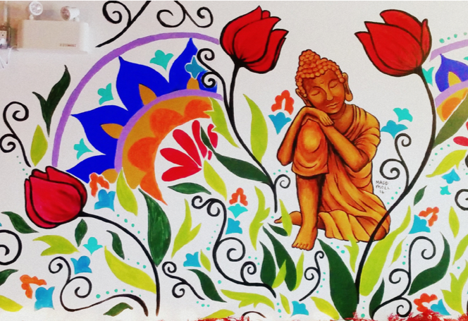

Authentic in house
breakfast & lunch,
made with love, for you.


Our coffee comes from Planet Bean, a small fair trade/organic micro-roaster located in Guelph, Ontario. Our daily medium roast is the Feminino coffee.
We make everything in house and infuse it with love! Including our bread, baked goods, soup, quiche, baked French toast, all our sauces and berry jam.
We believe in community, inclusivity and treating all beings with love and respect. Open seven days a week….hope to see you soon.